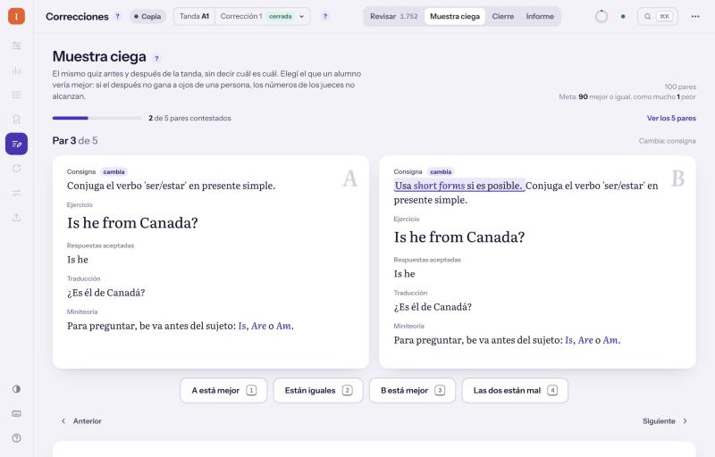
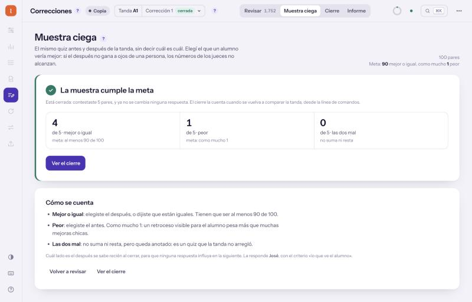
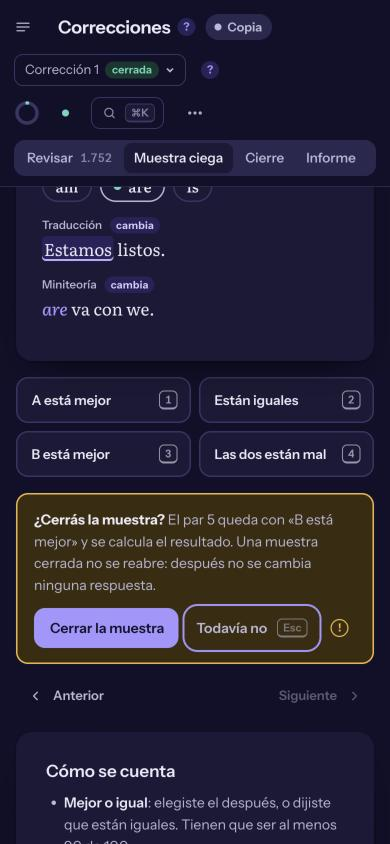
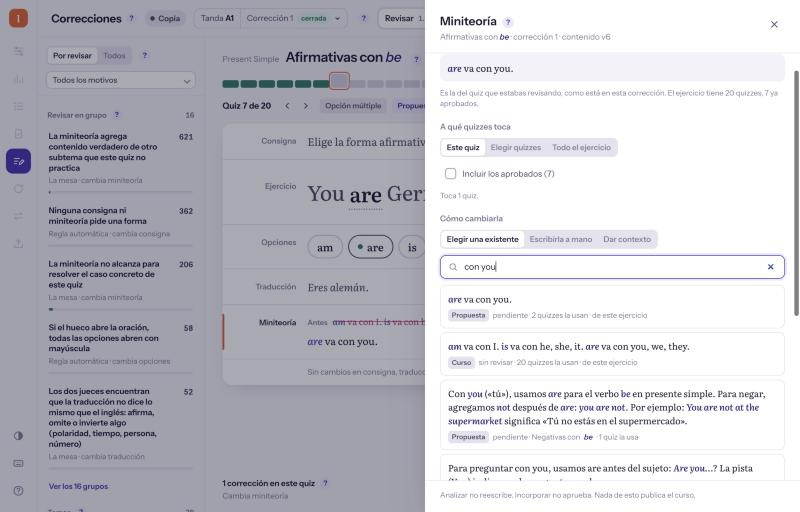
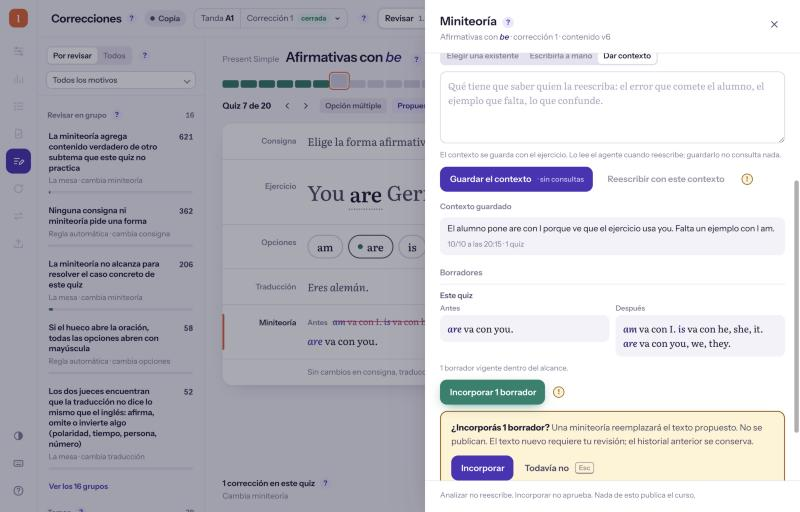
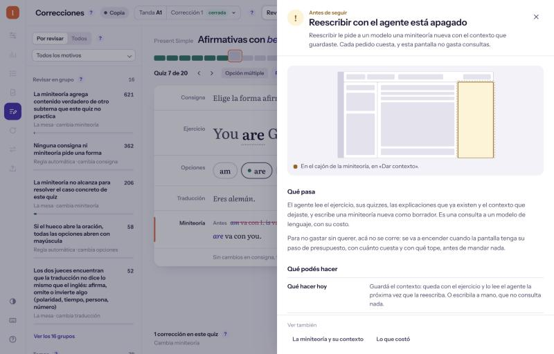
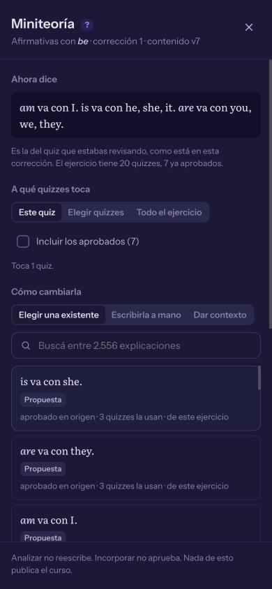
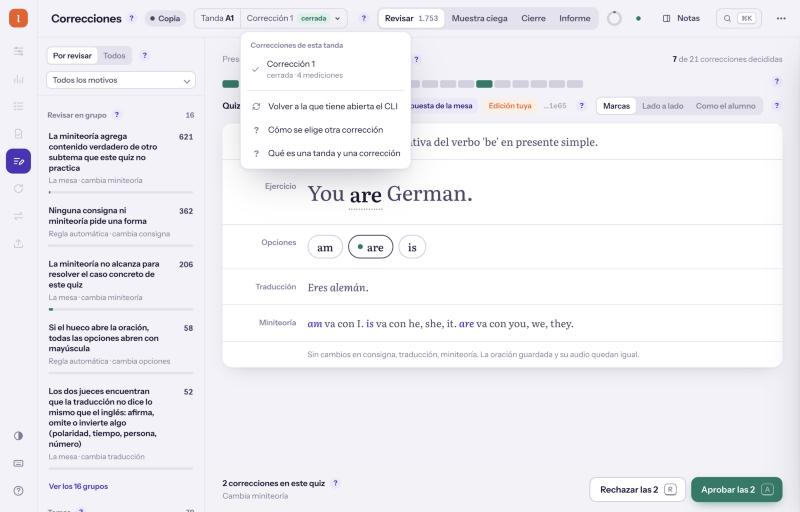

098
Resumen
Dashboard de content-audit, después del brief 089 · 10/10/2026
Correcciones queda completa en HTML, sin gastar una consulta
Muestra ciega, miniteoría a mano y elegir corrección, probadas contra una copia de la campaña.
Las tres piezas que faltaban del brief 089 andan. Lo que consulta a un modelo quedó apagado con su (!); falta tu OK para mergear la rama.
Tres piezas, 67 pruebas nuevas y cero consultas
288de 288
pruebas de la pantalla en verde; antes de esta tanda eran 221
121de 121
pruebas del servidor del tablero en verde
0
consultas a modelos o jueces: todo lo que escribe va a la copia
5
fallas que encontró la revisión, arregladas y cada una con su prueba
Lo del navegador lo miré a 1280 y a 390 px, en claro y en oscuro, contra la copia de la campaña A1.
La muestra ciega se contesta par por par
1Contestás cada parteclas 1 · 2 · 3 · 4A mejor, iguales, B mejor o las dos mal.
2El último par esperaCierra la muestra: va cuando estén los demás.
3Pide confirmaciónCerrar es definitivo: no se reabre ni se resortea.
4Sale el resultado4 mejor o igual · 1 peorContra la meta; recién ahí se sabe cuál era cuál.

Par 3: sin decir cuál es el después; lo que cambia, marcado

Cerrada en la copia: 4 mejor o igual, 1 peor, cumple la meta

En el celular, en oscuro: la confirmación del último par
La muestra de la copia la armé a mano con 5 cambios reales: sortearla no estaba autorizado. El cierre la cuenta cuando se vuelva a comparar la tanda.
La miniteoría se corrige sin consultar a nadie
1La mesa propusoare va con you.Quiz 7 de «Afirmativas con be»: perdía am e is.
2Busqué otra«con you», entre 2.556Del curso, de la mesa y borradores.
3Guardé borrador y contextoQuedan en la copia; el contexto es para el agente.
4Incorporécontenido v6 → v7Vuelve la del curso, sin revisar como cualquier cambio.

Elegir una existente, con buscador y de dónde viene cada una

Incorporar pide confirmación: no aprueba ni publica

El (!) de reescribir: qué haría, cuánto cuesta, qué hacer hoy

El mismo cajón en el celular, en oscuro
Reescribir y volver a analizar se ven en gris, cada uno con su (!). Un (!) abierto desde el cajón vuelve al cajón, con lo escrito.
Elegir corrección sólo lee; lo que gasta queda apagado
| Qué | Estado | Por qué |
|---|
| Elegir otra corrección del historial | anda | Sólo lee. La copia tiene una sola corrección: el cambio lo cubren 8 pruebas. |
| Otro nivel | después | El CLI todavía no tiene cómo leerlo. |
| Reescribir la miniteoría | apagado (!) | Consulta un modelo. |
| Volver a analizar | apagado (!) | Consulta a los jueces. |
| Sortear una muestra nueva | afuera | No estaba autorizado; la pantalla contesta la que haya. |
| Selectiva de distractores | apagado (!) | Consulta un modelo; sigue en el tablero de Flutter. |

El menú: la corrección abierta, marcada, y volver a la del CLI
Cada apagado tiene su (!), que dice qué haría, cuánto cuesta y qué se puede hacer hoy sin gastar.
Lo común, apenas un renglón; quedan tres deudas
Toqué
- El servidor le pasa a Correcciones las rutas que no atiende, en un commit aparte.
- En el celular, los modos anchos dejaban 76 px vacíos a la izquierda.
- El cierre ya no pide contestar una muestra que cerraste.
Queda debiendo
- El fetch de prueba está repetido en una prueba común.
- La muestra cerrada muestra la meta de hoy, no la guardada.
- Cerrar la muestra tarda 12 a 15 s: relee la bandeja entera.
Ninguna deuda rompe nada. La primera es de código común: no la toqué para no pisar a las otras pantallas.
Qué necesito de vos
1 · ¿Mergeo la rama a master, sin push?
Sí, mergeo local · recomendadoLo miro antes
Pasan las 288 y las 121. El guardián sólo marca los 4 archivos de Flutter que ya fallaban en master.
2 · ¿Paso el fetch de prueba repetido a lo común?
En una tarea aparte · recomendadoLo dejo así
Vive en una prueba de todas las pantallas; arreglarlo acá pisaría a las otras sesiones.